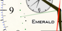

The outermost dial and the thin blue hand indicate the current azimuth of the Sun. The inner arc of dots and the thin green hand indicate the Sun's current elevation; there is one dot per 10 degrees.  The three additional dots corresponding to elevations of -6, -12, and -18 mark the boundaries of civil, nautical and astronomical twilight. In this example, the Sun is about 10 degrees below the horizon and it is nautical twilight.
The dot at 6 oclock is black for PM and white for AM.
Tapping the dials in Set mode advances the watch to the corresponding time;
if the main watch time is already equal to that time then it advances to the next event.
The upper pusher advances a day; the lower one an hour.
The phase of the Moon is shown just below 12 o'clock with a small indicator similar to
Chandra's.
Emerald Chronometer's azimuth values are true bearings, not magnetic. To convert you must know your local
magnetic declination .
.
But if you can see the Sun or the Moon you don't need a compass! Just hold your iPhone level and rotate it to point Haleakala's sun (or moon) azimuth hand at the real Sun (or Moon). An easy way to do this is by arranging for the shadow of a straight vertical object like a lamp post to fall on the display. Then the markings on the outer dial will point to the true directions.